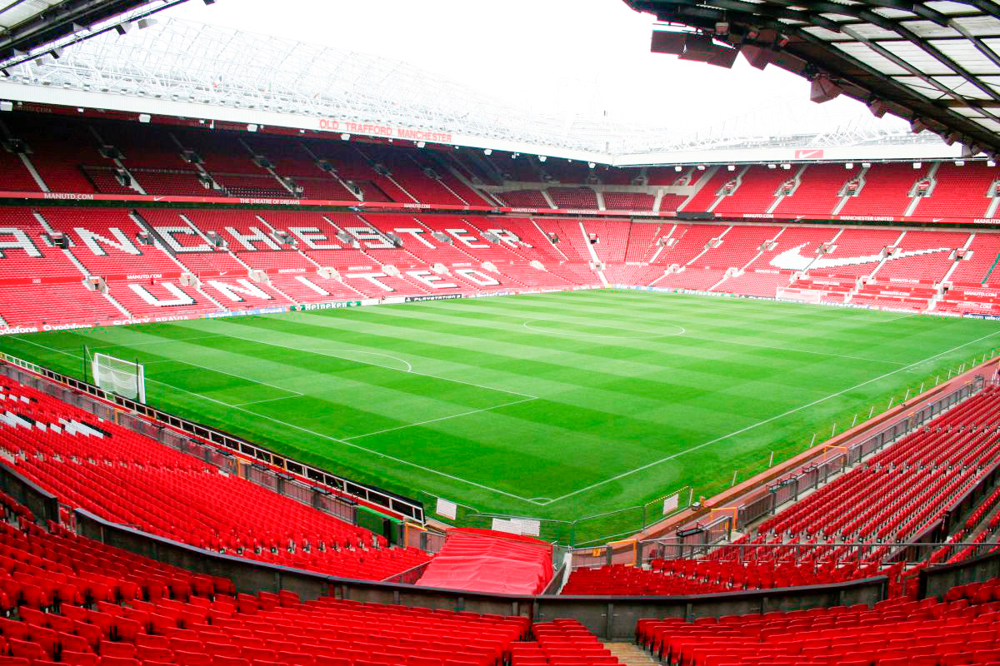
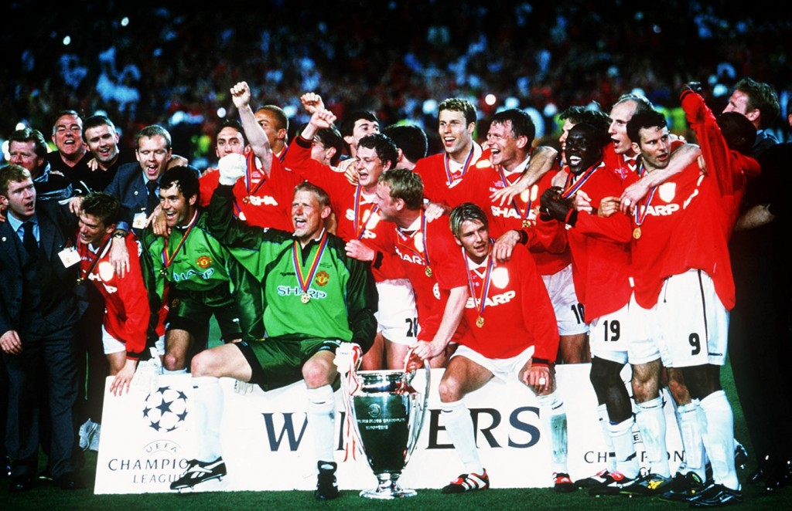
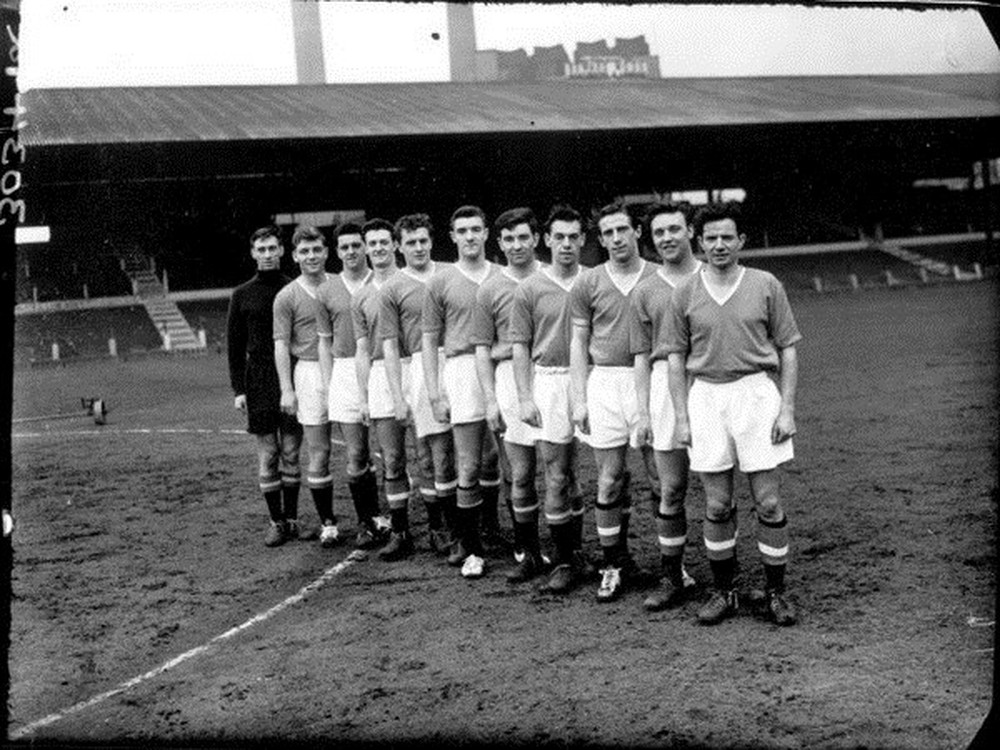
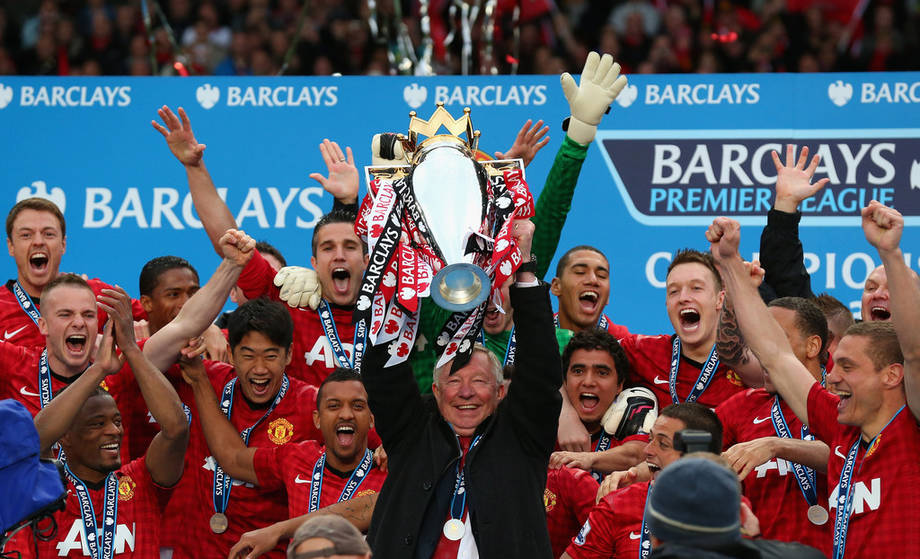
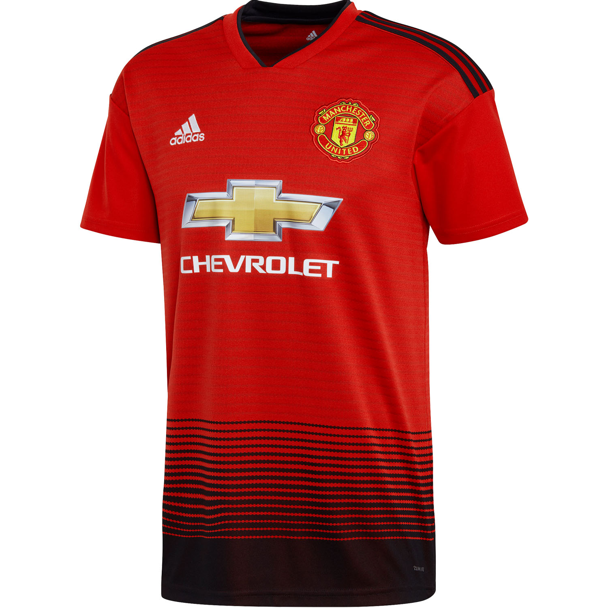
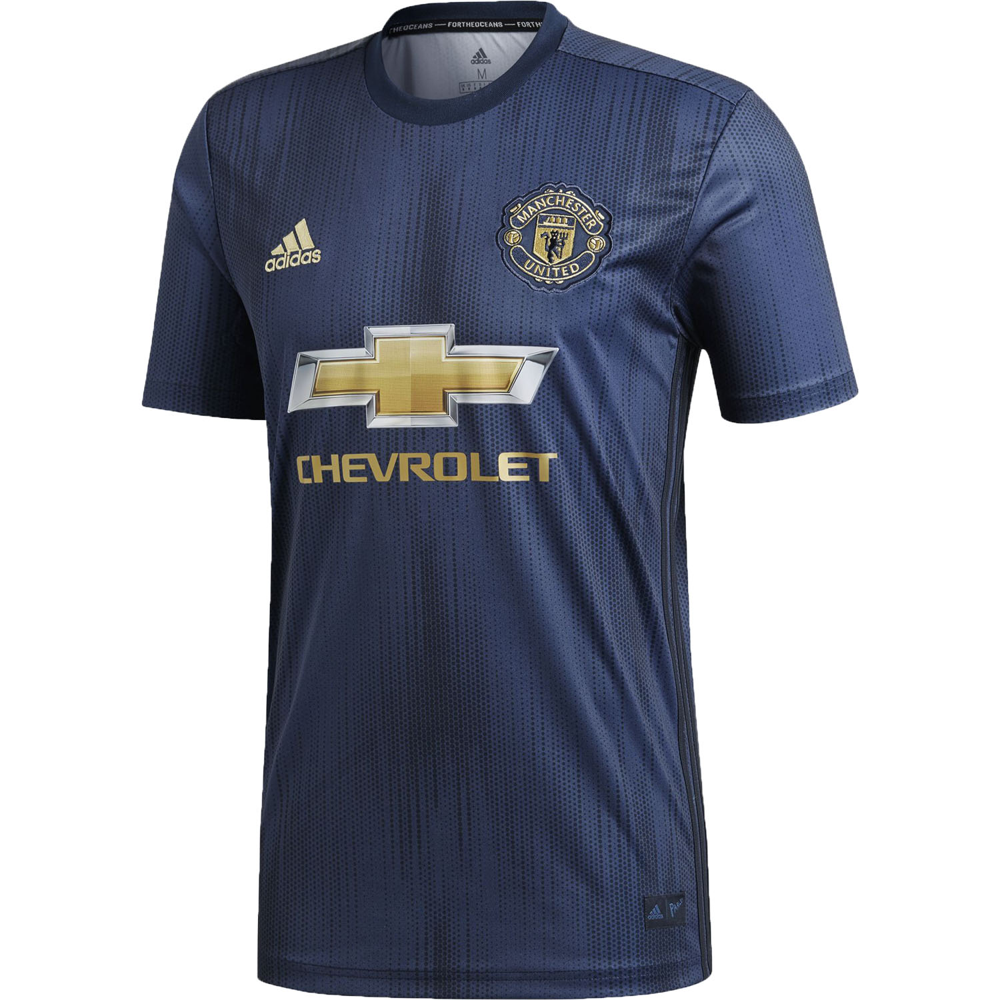
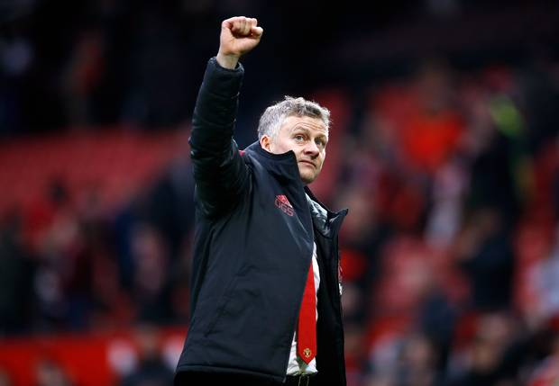
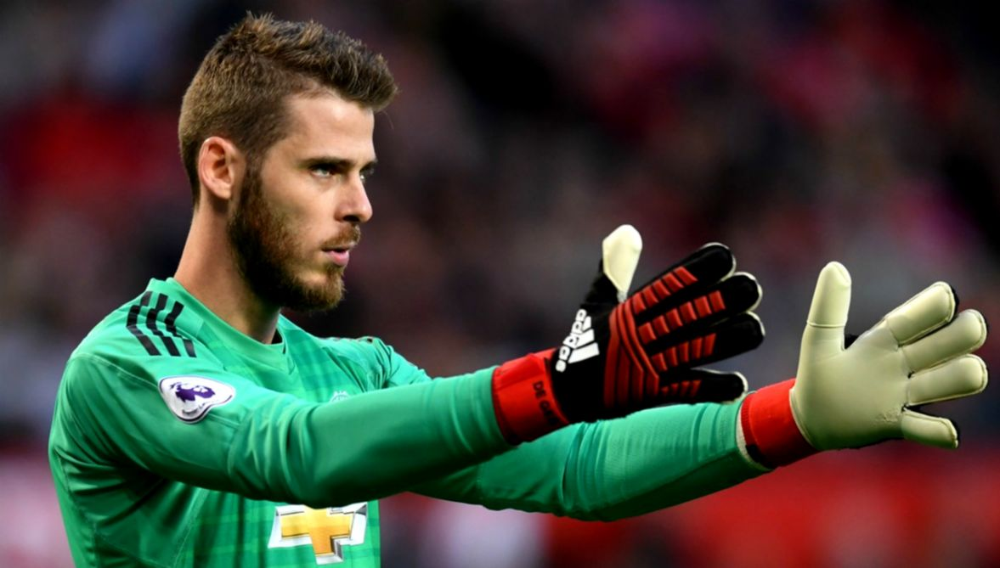
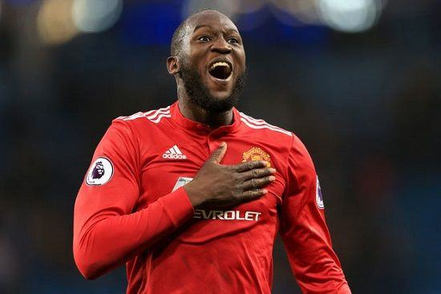

Manchester United F.C
Câu lạc bộ bóng đá Manchester United là một câu lạc bộ bóng đá chuyên nghiệp có trụ sở tại Old Trafford, Greater Machester, Anh. Câu lạc bộ đang chơi tại Giải bóng đá Ngoại hạng Anh, giải đấu hàng đầu trong hệ thống bóng đá Anh. Với biệt danh "Quỷ Đỏ" được thành lập ban đầu với tên gọi Newton Heath LYR Football Club vào năm 1878 sau đó đổi tên thành Manchester United vào năm 1902 và chuyển đến sân vận động hiện tại là sân Old Trafford vào năm 1910.
Manchester United là câu lạc bộ thành công nhất tại Anh, giữ kỷ lục 20 lần vô địch bóng đá Anh, đoạt 12 Cúp FA, 5 Cúp Liên đoàn và giữ kỷ lục 21 lần đoạt Siêu cúp Anh. Câu lạc bộ đã giành được 3 chức vô địch châu Âu, 1 UEFA Cup Winners' Cup, 1 UEFA Europa league, 1 Siêu cúp châu Âu, 1 Cúp Liên lục địa và 1 FIFA Club World Cup. Trong mùa giải 1998–99, Manchester United trở thành đội bóng Anh đầu tiên đoạt cú ăn ba trong một mùa giải gồm các chức vô địch Ngoại hạng Anh, cúp FA và UEFA Champions League.
Thảm họa hàng không München năm 1958 đã cướp đi sinh mạng của tám cầu thủ. Năm 1968, dưới sự dẫn dắt của Matt Busby, Manchester United là câu lạc bộ bóng đá Anh đầu tiên giành Cúp C1 châu Âu. Huấn luyện viên Alex Ferguson đã giành 38 danh hiệu khi dẫn dắt câu lạc bộ kể từ năm 1986, trong đó có 13 chức vô địch Premier League, 5 Cúp FA và 2 UEFA Champions League, trước khi ông tuyên bố nghỉ hưu vào năm 2013. Huấn luyện viên chính gần đây nhất của câu lạc bộ là José Mourinho, người được bổ nhiệm cuối tháng 5 năm 2016. Với phong độ không được tốt của đội ngày 18 tháng 12 năm 2018, CLB đã chấm dứt hợp đồng sớm với ông để đưa Ole Gunnar Solskjaer, một huyền thoại của CLB về làm HLV tạm quyền.
Manchester United là câu lạc bộ bóng đá đứng thứ hai về doanh thu trên thế giới trong mùa giải 2013-14, với doanh thu hàng năm 518 triệu euro và đứng thứ ba về giá trị đội bóng trên thế giới trong năm 2015 với trị giá 1,98 tỷ USD. Tính đến tháng 6 năm 2015, câu lạc bộ có giá trị thương hiệu bóng đá lớn nhất thế giới, ước tính trị giá 1,2 tỷ USD. Đây là một trong những đội bóng có số lượng người hâm mộ lớn nhất trên thế giới. Câu lạc bộ được vận hành dưới dạng công ty trách nhiệm hữu hạn cổ phần từ năm 1991 và sau khi được đưa lên sàn Chứng khoán Luân Đôn vào năm 1991, câu lạc bộ đã được Malcolm Glazer mua lại vào tháng 5 năm 2005 với giá gần 800 triệu bảng.

Manchester United
Tên đầy đủ Câu lạc bộ: Manchester United Football Club
Tên ngắn gọn: Vô Đối
Chủ tịch: Joel và Avram Glazer
Huấn luyện viên: Ole Gunnar Solskjaer (tạm quyền)
Sân vận động: Old Trafford
Sức chứa: 74.994
Trang Phục Thi Đấu
Sân Nhà
Sân Khách
Huấn Luyện Viên Trưởng
Ole Gunnar Solskjær
Đội Trưởng
David de Gea
Tù Trưởng
Romelu Lukaku
Follow >>>>>>